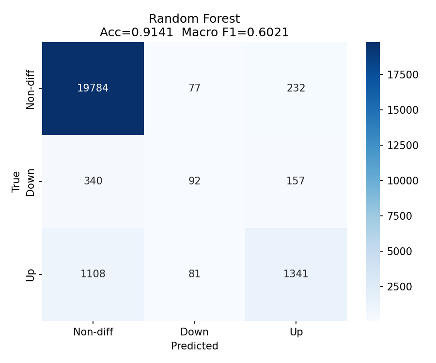
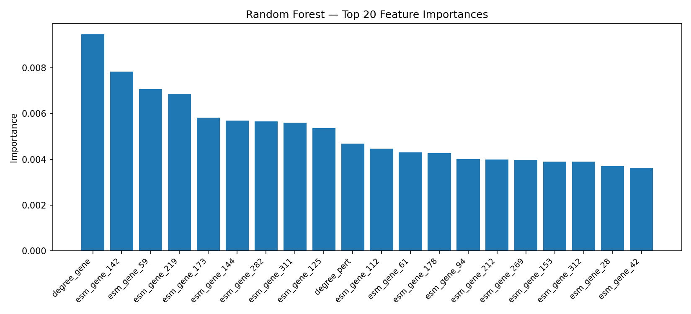
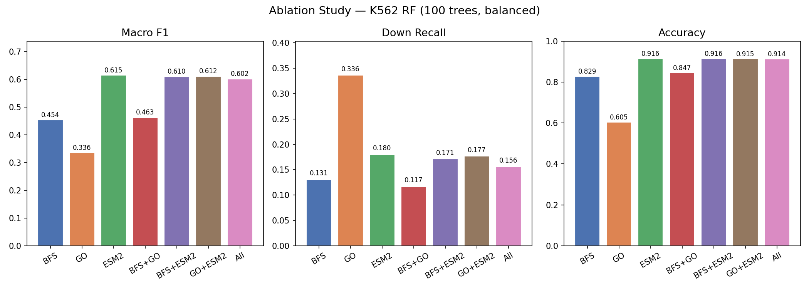

1 Scientific Question 科学问题
Given a cancer cell line, a perturbed gene (e.g., TP53 knocked out), and a target gene, predict whether the target gene is Up-regulated, Down-regulated, or Non-differential in the post-perturbation transcriptome.
给定一个癌症细胞系、一个扰动基因（如 TP53 被敲除）和一个靶基因， 预测该靶基因在扰动后转录组中是否 上调、 下调或 无显著变化。
Data: PerturbQA from the AROMA benchmark — pooled single-cell CRISPR screens (Perturb-seq) on K562 (leukemia), HepG2 (liver cancer), Jurkat (T-cell leukemia), and RPE1 (retinal epithelium). Label encoding: 0 = Non-diff, 1 = Down, 2 = Up. Class imbalance: ~87% / 4% / 9%.
数据来源：AROMA 基准数据集中的 PerturbQA——对 K562（白血病）、HepG2（肝癌）、Jurkat（T 细胞白血病） 和 RPE1（视网膜上皮）进行的混合单细胞 CRISPR 筛选（Perturb-seq）。 标签编码：0 = 无显著变化，1 = 下调，2 = 上调。类别不平衡约为 87% / 4% / 9%。
Training Cell Line训练细胞系
Test Cell Lines测试细胞系
Perturbation Types扰动类型
Prediction Classes预测类别
2Pipeline Overview分析流程
3Feature Engineering特征工程
BFS Path FeaturesBFS 路径特征
For each (perturbed gene, target gene) pair, we run single-source BFS from the perturbed gene on the STRING-derived PPI graph (18,479 nodes) with cutoff=6. Grouping by unique perturbed gene reduces BFS calls from 157k to ~hundreds.
对每对（扰动基因，靶基因），从扰动基因出发在 STRING 衍生的 PPI 图（18,479 节点）上进行单源 BFS，截断深度=6。按唯一扰动基因分组，将 BFS 调用次数从 15.7 万次降至数百次。
ESM-2 Protein EmbeddingsESM-2 蛋白质嵌入
Pre-computed 320-dim mean-pooled embeddings for all 18,479 graph genes using ESM-2 8M (frozen, CPU, batch_size=32). Each gene pair contributes one embedding per gene → 640 dims total. 98.7% coverage (234 genes zero-filled).
使用 ESM-2 8M 对图中全部 18,479 个基因预计算 320 维均值池化嵌入（冻结参数，CPU 推断，batch_size=32）。每对基因各贡献一个嵌入 → 共 640 维。覆盖率 98.7%（234 个基因以零向量填充）。
GO Term OverlapGO 功能注释重叠
For each gene pair, count shared GO terms across Biological Process (BP), Molecular Function (MF), and Cellular Component (CC). Parsed from goa_human.gaf using goatools; NOT-qualified annotations excluded.
对每对基因，统计三个命名空间中共享 GO term 的数量：生物学过程（BP）、分子功能（MF）、细胞组分（CC）。使用 goatools 解析 goa_human.gaf，排除 NOT 限定词注释。
4Results结果
K562 Test Set — All ModelsK562 测试集 — 所有模型
| Model模型 | Accuracy准确率 | Macro F1 | Down Recall下调召回率 | Up Recall上调召回率 | Notes备注 |
|---|---|---|---|---|---|
| Random Forest随机森林 | 91.4% | 0.60 | 18.0% | 54.1% | 100 trees, balanced weights100 棵树，均衡权重 |
| Logistic Regression逻辑回归 | 73.2% | 0.36 | — | — | saga solver, balanced weightssaga 求解器，均衡权重 |
| 2-layer GAT (GNN)两层 GAT（图神经网络） | 70.1% | 0.43 | 46.9% | 44.4% | ESM-2 node features + GOESM-2 节点特征 + GO |
Observation: Random Forest substantially outperforms both baselines. The GNN achieves better Down-class recall (+29%) at the cost of overall accuracy, showing graph message passing benefits minority-class detection.
观察：随机森林在整体准确率和 Macro F1 上显著优于两个基线。GNN（GAT）以损失总体准确率为代价获得更高的下调类召回率（+29%），表明图消息传递有助于识别少数类。

Random Forest confusion matrix · K562 test set.
Labels: 0 = Non-diff (87%), 1 = Down (4%), 2 = Up (9%). Class imbalance handled via class_weight='balanced'.
随机森林混淆矩阵 · K562 测试集。
标签：0 = 无显著变化（87%），1 = 下调（4%），2 = 上调（9%）。通过 class_weight='balanced' 处理类别不平衡。

Top 20 feature importances from the Random Forest classifier.
degree_gene (network topology) ranks first, followed by ESM-2 embedding dimensions of the target gene.
随机森林前 20 个特征重要性。
degree_gene（网络拓扑）排名第一，其次是靶基因的 ESM-2 嵌入维度，表明基因网络中心性和序列属性共同决定其对扰动的敏感性。

Ablation study — Macro F1, Down Recall, and Accuracy across 7 feature combinations. 消融实验 — 7 种特征组合的 Macro F1、下调召回率和准确率对比。
| Feature Combination特征组合 | Dims维度 | Accuracy准确率 | Macro F1 | Down Recall下调召回率 |
|---|---|---|---|---|
| BFS only | 5 | 82.9% | 0.454 | 13.1% |
| GO only | 4 | 60.5% | 0.336 | 33.6% |
| ESM-2 only | 640 | 91.6% | 0.615 | 18.0% |
| BFS + GO | 9 | 84.7% | 0.463 | 11.7% |
| BFS + ESM-2 | 645 | 91.6% | 0.610 | 17.1% |
| GO + ESM-2 | 644 | 91.5% | 0.612 | 17.7% |
| All (649) | 649 | 91.4% | 0.602 | 15.6% |
Key finding: ESM-2 alone (F1=0.615) nearly matches the full 649-dim model. Adding BFS and GO features provides no improvement — and slightly degrades performance. Protein sequence information captured by the pre-trained language model is the primary discriminative signal.
关键发现：ESM-2 单独使用（F1=0.615）几乎与完整 649 维模型持平。加入 BFS 和 GO 特征不仅没有改善，反而略微降低了性能。预训练语言模型捕获的蛋白质序列信息是预测扰动方向的主要判别信号。
Cross-Cell-Line Generalization跨细胞系泛化验证
The K562-trained Random Forest is applied directly to three unseen cancer cell lines without any retraining. Features are re-extracted for each cell line using the same pre-computed ESM-2 embeddings and gene graph.
在 K562 上训练的随机森林直接应用于三个未见过的癌症细胞系，不进行任何再训练。每个细胞系的特征使用相同的预计算 ESM-2 嵌入和基因图重新提取。
| Cell Line细胞系 | Cancer Type癌症类型 | Macro F1 | vs. K562 (∆F1)与 K562 差值 |
|---|---|---|---|
| K562 | Leukemia (CML)慢性粒细胞白血病 | 0.60 | — reference —— 参照 — |
| Jurkat | T-cell leukemiaT 细胞白血病 | 0.53 | −0.07 |
| RPE1 | Retinal epithelium视网膜上皮 | 0.51 | −0.09 |
| HepG2 | Hepatocellular carcinoma肝细胞癌 | 0.49 | −0.11 |
Interpretation: Macro F1 drops 0.07–0.11 across cell types. Predictions are not random (random ≈ 0.33) but cell-line-specific transcriptional context is clearly missing. Future work: condition on DepMap CCLE baseline expression profiles (~50-dim PCA embeddings).
解读：跨细胞类型迁移时 Macro F1 下降 0.07–0.11。预测结果非随机（随机分类器约 0.33），但仅靠序列层面特征无法捕获细胞系特异性转录上下文。后续方向：引入 DepMap CCLE 基线表达谱（约 50 维 PCA 嵌入）进行条件化。
Graph Attention Network (2-layer GAT)图注意力网络（两层 GAT）
As an alternative to the Random Forest, we train a 2-layer GAT directly on the PPI graph to learn context-aware gene representations. ESM-2 320-dim embeddings serve as initial node features; GO features are appended after graph encoding.
作为随机森林的替代方案，在 PPI 图上直接训练两层 GAT，以学习上下文感知的基因表示。ESM-2 320 维嵌入作为初始节点特征；GO 特征在图编码后拼接。
ARCHITECTURE网络结构
RESULTS vs. RF结果 vs. 随机森林
| Metric指标 | GAT | RF |
|---|---|---|
| Accuracy准确率 | 70.1% | 91.4% |
| Macro F1 | 0.43 | 0.60 |
| Down Recall下调召回 | 46.9% | 18.0% |
| Up Recall上调召回 | 44.4% | 54.1% |
Analysis: GAT achieves significantly better Down-class recall (47% vs 18%), suggesting graph neighborhood information helps identify directly regulated downstream targets. Overall accuracy drops 21 pp, likely due to training difficulty on a severely imbalanced task with CPU-only compute.
分析：GAT 在下调类召回率上明显更高（47% vs 18%），表明图邻域信息有助于识别直接调控的下游靶基因。整体准确率下降 21 个百分点，可能是因为在严重类别不平衡的任务上纯 CPU 训练图神经网络存在优化困难。
5Discussion & Future Directions讨论与未来方向
ESM-2 DominatesESM-2 占主导
Protein sequence embeddings explain almost all model performance. Network topology (BFS) and functional annotation (GO) contribute negligible additional signal, pointing to sequence-encoded regulatory constraints as the key determinant.
蛋白质序列嵌入几乎解释了全部模型性能。网络拓扑（BFS）和功能注释（GO）贡献的附加信号可忽略不计，指向序列编码的调控约束是扰动方向的核心决定因素。
Cell-Line Context Gap细胞系上下文缺口
Cross-cell-line F1 drops 0.07–0.11 — the model lacks cell-type-specific transcriptional context. Fix: augment with baseline expression profiles (DepMap CCLE PCA, ~50 dims) to condition predictions on cell state.
跨细胞系 F1 下降 0.07–0.11——模型缺乏细胞类型特异性转录上下文。解决方案：用 DepMap CCLE 基线表达谱（PCA 约 50 维）对预测进行条件化。
GNN TradeoffGNN 权衡
The GAT sacrifices global accuracy for minority-class recall. A hybrid approach — RF for common cases, GNN for rare Down predictions — could combine both strengths. Alternatively, fine-tune a larger ESM-2 on perturbation data.
GAT 以牺牲全局准确率换取少数类召回率。混合策略——RF 处理常见情况，GNN 专注下调预测——有望综合两者优势。另一方向：对更大版本的 ESM-2 进行扰动数据微调。
Clinical Validation临床队列验证
Model predictions can be biologically validated using TCGA patient cohorts: genes predicted as "Down" targets of driver LOF mutations should show systematically lower expression in patients harboring those mutations (Mann-Whitney + FDR).
模型预测可通过 TCGA 患者队列验证：被预测为驱动基因 LOF 突变"下调"靶点的基因，在携带该突变的患者中其表达量应系统性偏低（Mann-Whitney + FDR 校正）。
6References & Data Sources参考文献与数据来源
- AROMA (PerturbQA + Gene-KG)
Wang et al. (2026). AROMA: Towards Reasoning-centric Omics Modeling and Analysis. Tencent AI Lab. · Perturb-seq data: K562, HepG2, Jurkat, RPE1.Perturb-seq 数据：K562、HepG2、Jurkat、RPE1。 - ESM-2
Lin et al. (2023). Evolutionary-scale prediction of atomic-level protein structure with a language model. Science, 379(6637). · facebook/esm2_t6_8M_UR50D - GenePT
Chen & Zou (2024). GenePT: Using Large Language Model GPT as a Foundation Model for Gene Expression Prediction. Nature Methods. - STRING
Szklarczyk et al. (2023). The STRING database in 2023. Nucleic Acids Research. · Graph pre-built and distributed with AROMA.图由 AROMA 预构建并分发。 - Gene Ontology
The Gene Ontology Consortium (2023). Genetics. · goa_human.gaf.gz